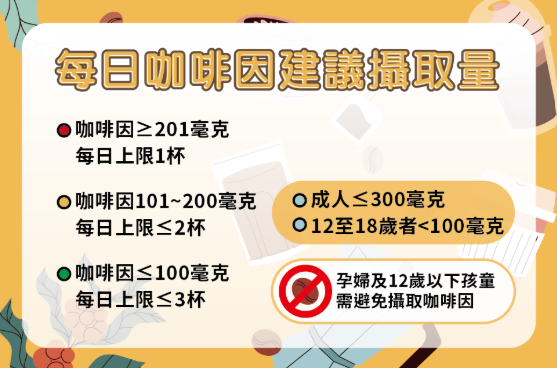

衛福部建議，成人每天咖啡因攝取量應不超過300毫克、12至18歲的青少年則應該在100毫克以內，孕婦及12歲以下孩童需避免攝取咖啡因。
依據「連鎖飲料便利商店及速食業之現場調製飲料標示規定」，含咖啡因成分之現場調製飲料都須標示總咖啡因含量，以最高值或以紅、黃、綠符號標示，紅色代表每杯總咖啡因含量201毫克以上、黃色代表每杯總咖啡因含量101-200毫克、綠色代表每杯總咖啡因含量100毫克以下。以健康成人為例，紅色飲品每日上限為一杯、黃色不超過兩杯、綠色上限為三杯。
營養師也提醒，有心律不整、易失眠、胃潰瘍等症狀的民眾，最好避免或減少含咖啡因的飲料，包括咖啡、茶、可樂和巧克力等（遠見編輯群，2025）。

資料來源：遠見編輯群 (2025年01月03日)。認識咖啡因!聰明計算放心喝。衛生福利部食品藥物管理署。
■ 每日建議上限：
| 族群對象 | 建議攝取量 | 最高上限 / 備註 |
|---|---|---|
| 健康成人 | 低於 300mg | 最高不超過 400mg |
| 孕婦 / 哺乳期 | 200mg - 300mg | 建議諮詢專業醫師 |
| 青少年 / 兒童 | 需謹慎攝取 | 最好避免攝取 |
* 資訊僅供參考，實際請依個人體質與產品標示為準。
■ 常見飲品咖啡因含量：
| 標示顏色 | 含量等級 | 咖啡因含量 / 杯 |
|---|---|---|
| 紅色標示 | 高含量 | > 200mg |
| 黃色標示 | 中含量 | 100 - 200mg |
| 綠色標示 | 低含量 | < 100mg |
💡 健康飲用習慣：
⚠️ 注意事項：
資料來源：遠見編輯群 (2025年01月03日)。認識咖啡因!聰明計算放心喝。衛生福利部食品藥物管理署。